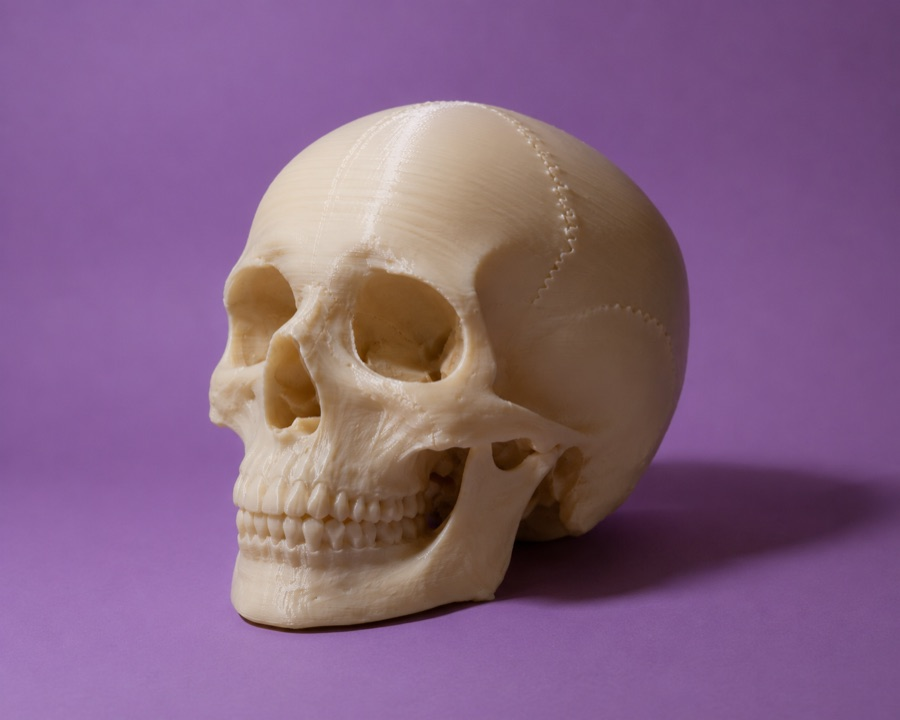

Oggetti radiologici
Ok, forse non sarò normale del tutto, ma appena ho visto la risonanza magnetica della mia testa non ho desiderato altro che poter tenere in mano il MIO cervello. E così me lo sono stampato! Adesso puoi farlo anche tu: negli ultimi 20 anni la Radiologia si è completamente digitalizzata, e le tue Radiografie, TC, Risonanze magnetiche e persino le ecografie possiamo farle tornare qualcosa di estremamente tangibile, oltre che un PERSONALISSIMO oggetto da decorazione.
Occhio: non tutte le immagini sono uguali, ma con un po' di elaborazione si può sempre stampare qualcosa di interessante. Contattami per avere più informazioni!
P.S. Se non hai mai fatto una TC alla testa ma hai sempre voluto un cranio da comodino... ti do il mio!

Cranio da Comodino
Un memento mori personalizzato sul comodino per ricordarti che ogni mattina... potrebbe essere l'ultima! Magari possiamo utilizzare la TC di quella volta in cui hai battuto la testa cercando di impennare con il monopattino elettrico.
Scrivimi per averloCranio da scrivania
Modello anatomico stampato in 3D, perfetto come soprammobile scientifico.
Scrivimi per averloSpilla a tema raggi X
Un piccolo accessorio per chi ama la radiologia. Ideale come regalo.
Scrivimi per averlaStampa radiografica d'autore
Una radiografia rielaborata in chiave artistica, pronta da appendere.
Scrivimi per averlaSegnalibro "osso" 3D
Un segnalibro a forma di osso lungo, leggero e resistente.
Scrivimi per averloSu misura per te
Hai un'idea a tema radiologico? Raccontamela e vediamo se posso realizzarla.